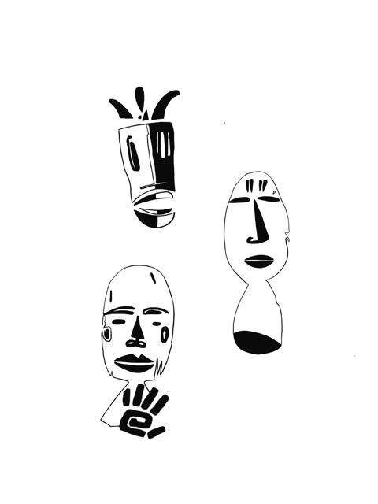
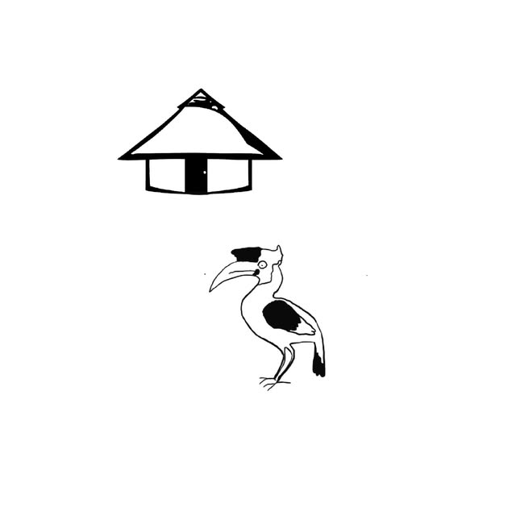

Faces & stories
Expressive masks. A play of line, shape and negative space.

Personal projects, flash & fine line. Traditional influences and African iconography, drawn into something of your own.
Bold silhouettes, fine lines and symbols with character. Atelier Koka brings traditional influences and African iconography into a personal tattoo practice in Fribourg.
Bring your references and the story behind them. Together, we can explore a design, placement and scale that feel right for you.
Masks, movement, animals and symbols. Discover the drawings, then get in touch to ask about a particular piece.
Original designs from Atelier Koka. Open a piece to see the Instagram post; message the artist to confirm availability.

Expressive masks. A play of line, shape and negative space.
Dancing silhouettes, bold contrasts and geometric detail.

A hornbill and a familiar roofline, reduced to their essentials.
Tattoo artist in Fribourg, exploring personal projects, flash and fine line through traditional influences and African iconography.
From a drawing on paper to a piece on skin, the work begins with a conversation.
New drawings, fresh tattoos and a look at the process. Follow along on Instagram.
A flash that caught your eye, a personal project, or just a question. Let’s start with a message.
Fribourg / Switzerland